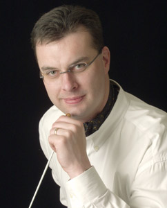

Artistic Advisor
David Waltman
 David Waltman has developed an international reputation for both compelling symphonic interpretations and a remarkable ability to inspire orchestras to new levels of achievement. David also serves as Artistic Advisor of the Bainbridge Symphony Orchestra and Permanent Guest Conductor of the Moscow State Symphony Orchestra in Russia, and maintains an active guest conducting schedule in the U.S. and abroad.
David has a keen interest in the continuing evolution of symphony orchestras in the 21st century, with a particular emphasis on sustainable business models and community access. In 2005, with the cooperation of business and community leaders in King County, Washington, David launched the Third Millennium Orchestra Project, intended to develop a "best practices" model for a sustainable 21st century regional orchestra. As part of this project, David has greatly expanded Rainier Symphony's community relationships through collaborations with the Evergreen City Ballet, Emerald Ballet Theatre, ChoralSounds Northwest, Northwest University, the Everett Chorale and numerous other performing and visual arts organizations in the region.
For nearly two decades, David has also been a sought after clinician and teacher, and has led conducting workshops in Washington state, Hawaii, California, Washington D.C, Colorado, Arizona, New York and Maryland. David's current and former conducting students have been directors or officers assigned to numerous elite military ensembles, including the US Navy Band, the US Naval Academy Band, the US Navy Pacific Fleet Band, the 82nd Airborne Division Band, Navy Band Southwest, Navy Band Southeast, Navy Band Northwest, and the US Navy European Forces Band in Naples, Italy.